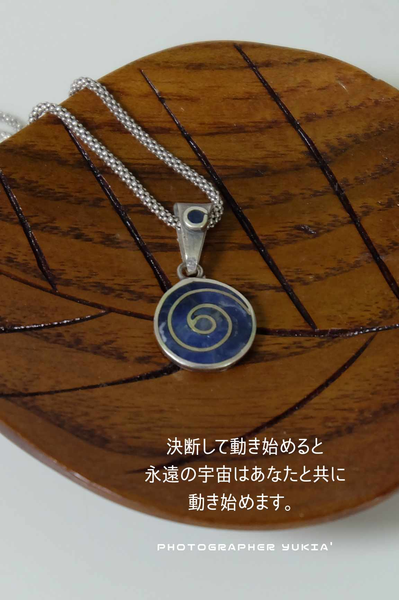
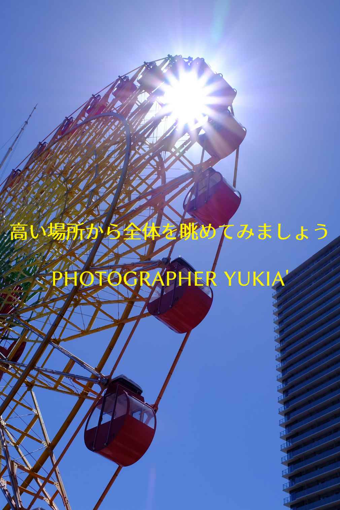
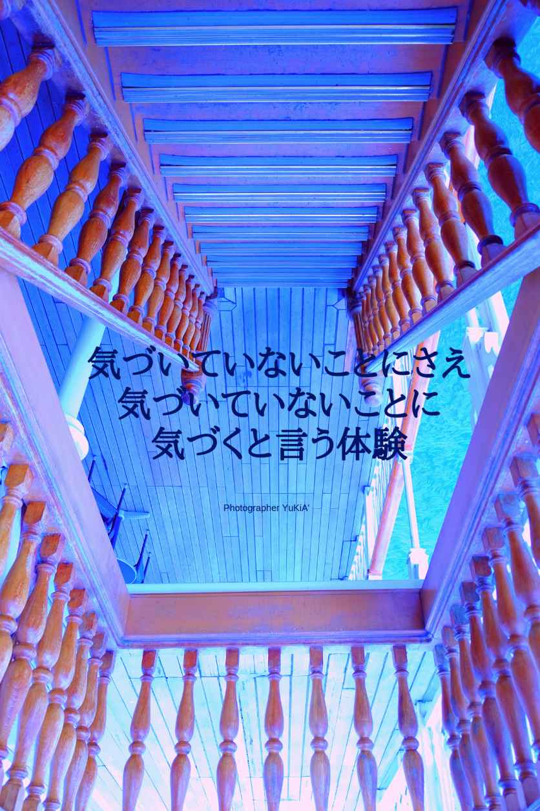
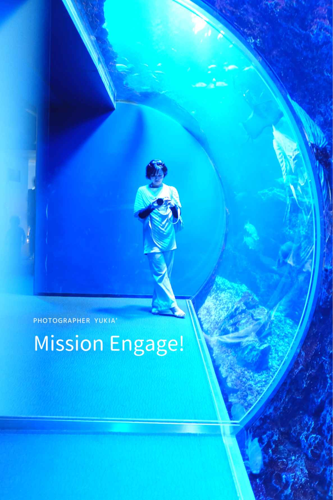
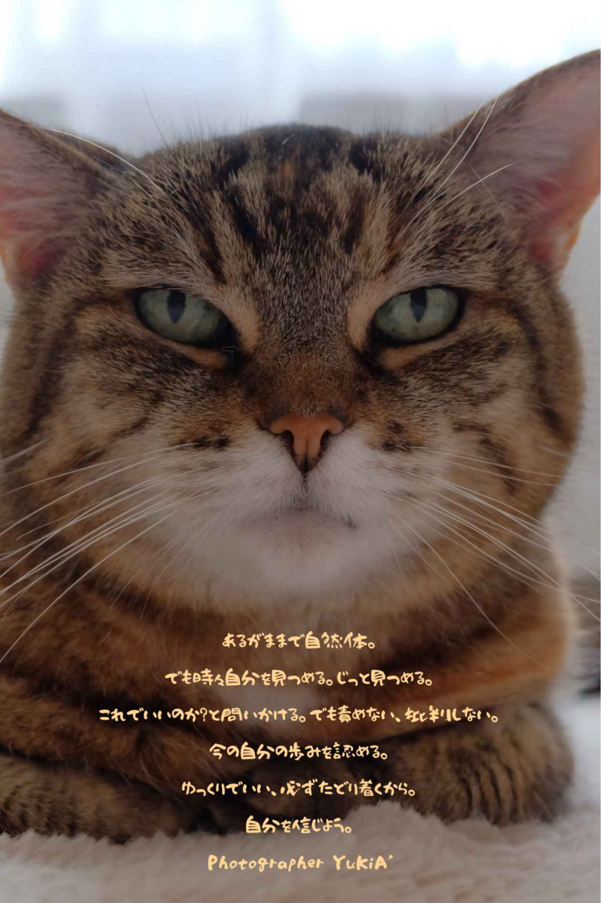

| Inspiration 啓示: 魂を鼓舞するハイアーセルフからのメッセージ | |
| スピリチュアルカウンセラー泉 雪恵 | |
| (2019) | |
Copyright © 2019 Yukie Izumi All rights reserved.
目次
この本はスムーズに出版されませんでした。当初の予定より一ヶ月以上も遅れました。その間に、内容も一から書き直し、掲載画像も一から作り直し、アマゾンkindleから電子出版デビューすることになりました。
最初は紙の書籍デビューであったものが、予定外の電子出版からのデビューとなりました。この展開に最初は戸惑いましたが、今はそれで良かった！と胸を撫で下しています。なぜなら通過した後に、私のハイアーセルフが体験させたかった意図の全容が、自分なりにわかったからでした。
本を出版するにあたって難所を通過し、難問を自分なりに説いてきました。自分にとってこの出版という体験は、人生冒険ゲームの第一章のようでした。ゲームの中には、必ず難しい部分があります。けれども、そこを通過しないと主人公は前に進めないのです。
難しい問題に直面した時、非常に困難な状況に遭遇した時、いつも私の頭の中にあった言葉は、「どうやったらできる？」です。無意識に「どうやったら出来る？」を考えていて、その方法を自然に探していました。
難関を突破するたびに、見えない領域からの守護を得られ、より深いレベルからのメッセージを受け取るための導管を得ることができました。ゲームで主人公が敵を倒すたびに強くなり、アイテムをゲットするようなイメージです。難関には正直出会いたくありませんが、向き合い、通過することで強くなり、賢くなり、自信を得ることが出来る、「人生冒険ゲーム」の大切な部分だと捉えています。
この状況は、他の人には挫折に見えたかもしれません。けれども私には、新しいチャレンジと成功へのデータ収集に観えていました。どんなに困難な状況を体験しても、書くことを辞めようとは思いませんでした。出版を諦めることなど私の頭の片隅にもなかったと思います。難しい問題に直面することや、困難に遭遇しても、書くことを辞めてしまいたいは思わなかったのです。私にとっての、「魂を鼓舞するライフワーク」にたどり着けたことを、本当に嬉しく思っています。
また、出版時期が延期になった期間に、予想外のことが起こることや、自分にとって意味のある体験を通過しました。それらを通過するたびに、次の道を見つけ、もっと高い視野から物事を観ることが出来るようになったと感じています。
出版が延期した期間に学んだことの一つは、「本当の自分でいて良いこと」です。人がスピリットのレベルからこの世に顕現する目的の一つは、自分の人生を生きることです。親の人生を生きるのではない、夫や妻、愛する人の人生を生きるのではない、子供の人生を生きるのではないと言うことです。
そして、相手が持つべき荷物を勝手に持ってしまわないこと。自分の持つべき荷物を人に背負わせないこと。それらのことが、本当の自分でいることを許可する際に、非常に大切であることに気づきました。
例え、愛する人が苦しむことや、病気になって苦痛を味わっていても、本人の代わりに引き受けられる人はいません。なぜなら、その人は生まれる前に、スピリットレベルで困難や病気を選択してきたからです。困難や苦しみを通過することの意味は一言では言えませんが、それを体験することを選択した強い魂であるともいえるでしょう。その人が、その困難や苦しみを通過することの真の意味は、永遠の創造の源領域のみでわかることなのでしょう。
起こっていることの真の意味は、表面上からはわからないことが多いのです。また、一つのことが原因だとは限らず、複雑に絡み合ったものが背後にあることがあります。だから、相手のことを可哀想と言う目で見ないこと。可哀想と思うことは、「その人には乗り越えられる力がない」とレッテルを張った目で観ることになります。
愛する人が苦しんでいるときに私たちに出来ることは、相手への関心を向けることです。また、必要な援助の手を差し伸べること、相手の選択を尊重して見守ること。これは、自分を犠牲にして相手のことを背負うことや、その人が持つべき荷物を持つことではありません。
また、意識を自分の内側へ向けて、今の自分を精一杯生きること。自分の人生を選択すること。それが、今を生きることであり、ハイアーセルフが私たちを通して、この世で体験したいことなのです。
自分の人生を本気で生きる選択をし始めると、周囲にあなたを、「正しい枠」に入れたがる人に遭遇します。また、あなたのことを嫌う人も出てきます。本当の自分を生きると、誰かに嫌われる......。けれども、人から嫌われることを恐れて、人に好かれるために自分を押し殺す人生を選ぶのか？それとも、自分の道を進むのか？その選択権は、いつも自分にあることを学びました。また、どう生きようが、自分のことを嫌う人も好きになる人もいます。人があなたをどう思うかはコントロール出来ないのです。
出版が延びた意味は他にもありますが、これで良かったと心底納得しています。今は自信を持って、この本を送り出す心境になれたことに感謝しています。
第一冊目が書き終わりました。現在、二冊目に取り掛かっています。今年は、本を四冊出版する予定です。その道の途中で、これから私の人生に、どんな冒険と難所が待っているのでしょう？考えるとワクワクします。
私の人生冒険ゲームは、まだ始まったばかりです。そして、この本を引き寄せてくださったあなたも、人生冒険ゲームの新しいステージにいらっしゃるのかも知れません。
開いた場所にメッセージがあります
この本は、最初から読む必要はありません。どのページから読んでもかまいません。開いたページに、今の自分に必要なメッセージやガイダンスがあります。また、自分に自信を与えるためのアファメーションもあります。
アファメーションは、自分自身への宣言です。言葉に出して言うことで、古い信念を新しい信念に書き換えることをサポートします。
スピリチュアルなメッセージを受け取りたいときに、この本をパッと開いてみましょう。どこからでも読んでみましょう。
一日の始まりにメッセージを受け取る
本を手にとって、深呼吸を三回しましょう。
次に、どのページからでも良いので開いてみます。
開いたページに、今のあなたにとって必要なメッセージがあります。どんなメッセージでも、今の自分にとって意味があることと捉えて一日を過ごしてみましょう。
メッセージを受け取り自分の内側を観察する
メッセージを読んだら、心と身体がどのように感じているのかを観察してみましょう。またメッセージに関するシンクロが起こったら、日記に書き留めておきましょう。
メッセージの中には、すぐに意味がわからないこともあります。後になってから、意味がつながることがあります。自分の内側と外側に起こることを観察し続けることで、バラバラだったパズルのピースがぴったり合わさるように、全体像が観えることがあります。
問題解決のためにメッセージを受け取る
悩みがあるときは、深呼吸を三回して以下の文言を唱えてください。「私は、◯◯について答えを求めています。私は、自分自身のハイアーセルフと繋がり、この本を通じてメッセージを受け取ります。」
一呼吸置いて、本のページを開いてみましょう。
そこには、ハイアーセルフがあなたに伝えたいメッセージがあります。それを読んでどんな気持ちになるのか、感情を観察してみましょう。
もしメッセージの意味が分からない場合は、次の文言を唱えてください。「いま受け取ったメッセージの意味が分かりません。私に分かる形でメッセージを下さい。」
そして、三回深呼吸しましょう。
ハイアーセルフは、あなたの問いかけに必ず答えます。メッセージの意味がすぐに分からないときも、焦らずに一日を通して答えを受け取ってみましょう。
しっくりくる答えがやってこないと感じる時に
ある程度時間をおいても答えを得られない場合は、一度答えを求めることを手放してみましょう。心の執着が外れると、ポンと受け取れることがあります。ストンと意味がわかることがあります。自分にとって、しっくりくる現象を体験するかも知れません。心の執着は、時に答えを受け止めることを、せき止めていることがあります。
メッセージを受け取るコツは、楽しみに待つことです。待っている間に、永遠の宇宙はあなたが受け取るための何かを整えています。待っている間は、他に楽しいことを探していましょう。待ち時間は「ギフトを受け取るための時間」であると捉えてみましょう。
メッセージや答えを受け取るタイミング
ハイアーセルフからのメッセージは、随分後になってくることがあります。そういった場合は、「受け取るまでの間に体験していること」が重要なのです。それらが、ハイアーセルフからのメッセージを受け取るための受け皿を作っています。
また、ハイアーセルフが答えるタイミングは、永遠の宇宙のタイミングです。私たちの生きている時間枠とは少し違います。
答えがすぐにやってこないときも、諦めずに問いかけ続けましょう。答えを受け取るための、ベストタイミングまで待ちましょう。ハイアーセルフと永遠の宇宙は、それをあなたのために用意しています。永遠の宇宙から、より多くの恩寵を受け取っている人の共通点は忍耐力です。
自分の思った通りに物事が運ばないときは、全てが上手くいっていないと感じるかもしれません。ハイアーセルフは、あなたの問いかけに必ず答えます。信じて答えを楽しみに待ちましょう。
待ち時間はいつもギフトです。あなたが楽しみに待っている間に、永遠の宇宙が受け取る時期を調整し、予想以上の素晴らしいものを用意してくれているのです。待ち時間はそのタイミング調整です。
ハイアーセルフからのメッセージの捉え方
全ては必然であり、偶然はありません。あなたが受け取ったメッセージには必ず意味があります。また、後で意味がつながってくることがあります。
ハイアーセルフからのメッセージを受け取るコツは、心を開いて柔軟でいることです。そして、どんな感情が湧き上がってきても、それが魂の旅路のプロセスであることを理解しましょう。
どんなメッセージを受け取っても、それには意味があることと捉えること。自分の選択を信頼すること。あなたのハイアーセルフのサポートを信頼すること。あなたを創造した永遠の源、永遠の宇宙の法則を信頼すること。そのような姿勢から、メッセージの本質が見えてくるでしょう。
魂の旅路の始まり
本書を通してメッセージを受け取ろうとすることで、あなたのハイアーセルフは、魂の目覚めの促進をサポートし始めます。そして、あなたが本当に生まれてきた意味や、今生で成し遂げようとしていることへとゆっくり導き始めます。
この本は、あなたが潜在意識レベルで引き寄せました。あなたのハイアーセルフは、本書を通じてあなたとコンタクトをし始めました。
あなたはいつか、「この時期にこのタイミングで、魂の目覚めのアラームをセットしていたこと」に気づくでしょう。そして、本書を引き寄せた意味を知ることでしょう。
あなたのスピリチュアルジャーニーは既に始まっています。一緒に旅を続けましょう！
聖なる正しい秩序と聖なる正しいタイミング
全ての現象は、永遠の源レベルでの、聖なる正しい秩序と聖なる正しいタイミング上で展開されています。それは永遠の源の法則、永遠の宇宙の法則です。私たちは、その法則の中に存在しています。
物事のタイミングは、私たちの力や意図が及ばないことがあります。意識している、していないに関わらず、起こっていることは、より高いレベルで自分が創り出し、引き寄せているのです。
創り出したものの原因が分からない時は、遠い前世や集合意識のカルマが原因となっているのかもしれません。いずれにせよ、それらの法則の中で魂の体験をすることを、私たちは選択しています。また、永遠の源の法則上で創造することを約束して、この現実世界を体験する場所に生まれました。
永遠の源の意図
この世に存在するものは、全て永遠の源の意図を持って創造されました。意図のないものはありません。目的のないものはありません。ですから、永遠の源の意図から観るとすべては必然で、善も悪も目的を持って存在しています。
ハイアーセルフレベルでの人生の意図は、その人の青写真の中にあります。あなたのハイアーセルフが導いている方向は、できる限りの可能性を考えて、最善を尽くすと言う方向性です。その方向性上では、あなたの眠っていた可能性がどんどん引き出されて行くでしょう。
自分に与えられたベストを尽くし続けることで、魂が本当に望んでいる進化と成長を成し遂げることが出来るのです。私たちは、自分が想像する以上に大きな意図と可能性を持って生まれた存在なのです。
真実はあなたを自由にします
魂の冒険の旅を始めたあなたは、真実を知ることが怖いと感じるかも知れません。また、その恐れを潜在意識レベルで感じていることもあるでしょう。なぜなら、真実は知ることで、ぬるま湯から出ることを余儀なくされるからです。
ぬるま湯から出ることは、意識の変容を促します。意識が変容すると、実生活に何らかの変化が起こり始めます。真実は、あなたの内側から変化を起こす力があるのです。そして、真実を知ったあなたは、後戻りが出来なくなるでしょう。
真実を知ったあなたは、やがて古い自分を脱ぎ捨てることでしょう。自分の中に無限の力があることを思い出すでしょう。今まで自分を覆っていた硬い殻を内側から破り、自由な世界へと羽ばたいて行けることを思い出すでしょう。真実を知ることは、あなたをスピリットレベルから真に自由にすることなのです。
永遠の源の愛はいつもあなたに向けられています
永遠の源の愛は、いつもあなたに向けられています。そして、その愛はエネルギーや周波数、振動や波動として、どこにでも存在しているのです。私たちは、そのような時空間の中で、魂の探求の旅を続けています。
永遠の源は、そこから個別化した一人一人の存在を認識しています。私たちは、永遠の源に愛され、支えられている存在なのです。
存在しているものは、最初は、永遠の源の、愛の周波数から創造されたのです。自分とは分離しているように観えるものも、全て一つの領域からやってきたのです。私たちはそこからやってきて、いずれそこへ還ります。
創造は、常に永遠の源の領域の中だけで行われています。言い換えれば、その外に出ることは不可能なのです。
私たちは創造主の顕現として、無から創造する力を与えられています。どんな状況でも、永遠の源の真実の愛を放射する力を与えられています。
永遠の源の愛を感じるために、まずは自分を愛しましょう。それは、ナルシスト的な態度ではありません。自分に関心を向け、自己のニーズを満たし、自身の尊厳を持つと言う態度です。これを深めることで、同じ深さで本当に人を愛することができるようになります。
また、その深さで分かり合える相手を引き寄せることができるでしょう。自分を本当に愛さなければ、この意味を本当に理解することは難しいでしょう。
これらの道をマスターすると、永遠の源の愛の周波数と同調することが容易になって行きます。あなたから永遠の源愛が放射され、あなた自身が、「永遠の源の愛の源泉」になって行くでしょう。
あなたが永遠の源であったことを思い出すこと
愛の力を使うこと、共同創造すること、創り出し続けること。それらは、私たちの生まれてきた目的の一つです。
自分自身が永遠の源であった記憶を思い出すことは、長い間続けてきた魂の探求の最終目的です。私たちは、その旅の途中にいます。その旅の中で、魂は進化とともに「個人の欲求を超えたより大きな意図」へと向かって行くでしょう。それがあなたの本当のミッションです。
あなたの本当のミッションにたどり着く方法は、内側の衝動に従うことです。魂が震える内側の衝動に従いましょう。それは人生の青写真を指し示すナビゲーションです。
あなたが、個人の欲求を超えたより大きな意図へと歩む過程で、あなたの小さな願望は、予想以上の形で実現するでしょう。なぜならその生き方は、「自分の意図を死なせて永遠の源の意図を生かす」ことである故に、あなたは法則とともに在るからです。そして、永遠の源の無限の豊かさによって、あなたの全存在が完全に守護され、支援を受けるのです。
スピリットの目覚めと新しいステージ
魂レベルでの目覚めが始まった時、あなたは深いレベルから探求の旅の目的を思い出すかも知れません。そして、早く目的地に辿り着きたい気持ちになるかも知れません。その時に陥りやすいことは、早く目覚めようとして焦ることです。今の自分から新しい自分へと早く変わりたくて、道を急ぐことです。
焦り急いで進むことは、近道ではありません。大切なことは、一歩ずつ確実に歩み続けることです。できる限り、正しい選択をし続けることです。一貫した行動を継続することです。
この文章を読んでいるあなたは、今スピリットの目覚めの新たなステージにいます。一度、ゆっくり深呼吸をしてみましょう。そして、自分自身を深く信じましょう。
全ての存在がやってきた永遠の源という場所について
あなたのより高い意識、ハイアーセルフ、それ以上の段階にある魂は、何千億年もの旅をしています。魂は常に進化していて、永遠とも呼ばれる長い間の旅を続けています。
全ての存在は、一つのエネルギーの時空間からやってきました。その時空間は、永遠の源や永遠の創造の源と呼ばれています。私たちが神と呼んでいる存在以上の存在であり、場所であり、空間であり、エネルギーの振動の状態です。そこは、始まりも終わりもない、永遠に活動している意識の状態の場所です。そこからは、常に何かが創造されています。
誰もが、最初はその場所からやって来たのです。そして、今の旅を終えたら段階を経て、いずれその場所に還ります。
ハイアーセルフは高次元のあなたです
ハイアーセルフは、物性の身体を持たない高次元の存在です。その存在が、物性の身体を持つあなたとして、この世で実現したいことがあります。あなたが生まれた目的の一つは、それを実現することです。あなたはハイアーセルフであり、ハイアーセルフはあなたです。ハイアーセルフとは、「より高い意識レベルにある自分自身」という意味です。
あなたの本来の姿は、顕在意識、潜在意識を超えた領域に存在するエネルギー体です。そのエネルギー体は常に振動していて、叡智と記憶を保っています。そのエネルギー体の一部が、あなたの身体に入っています。
意識の進化には段階があります。低いレベルから高いレベルに向かって進化し、本来の状態を取り戻して行きます。進化という体験のプロセスを行うために、永遠の源から一番低い表現形態へと現れた存在もいれば、途中でそのプロセスに詰まってしまった存在を手助けするために、「救出ミッション」としてやって来た存在もいます。
どんな存在も、初めは最も高いレベルから一番下へと向かって降下してきました。その意味は、永遠の源から直接的に、一番低い表現形態の場へと現れたと言うことです。
今いるべき場所について
今いる場所は、ハイアーセルフが選んだ今いるべき場所です。また、あなたの持っているエネルギーの振動や過去のカルマが、今の場所を引き寄せています。
いま目の前で関わっている人は、スピリットレベルでご縁のある人々です。カルマの解消として出会っているご縁かも知れません。カルマの解消とは、エネルギーレベルでの負債の相殺のようなものです。ですから向き合うことで、未浄化なエネルギーを昇華することができます。それは古い、役に立たなくなったエネルギーを、永遠の源へ還すという解決方法なのです。
あなたは、目的を持って生まれました。それを思い出すことが、ミッションの始まりです。あなたが、ハイアーセルフからのメッセージに気づくことや、内側からの導きに従うことで、永遠の源が、あなたを通して本当にさせたいことへと導かれて行くでしょう。より大きな意図から、本来いるべき場所へと導かれて行くでしょう。
ハイアーセルフがあなたを通してさせたいことのリスト
ワクワクすること
探求し続けること
波に乗り続けること
行動を起こすこと
チャレンジし続けること
あきらめないこと
立ち止まってもいいから、歩み続けること
本当に望むことを明らかにすること
本当に欲しいものを知ること
自分で選択すること
自分の荷物を自分で持つこと
可能性を探し続けること
自分を高め続けること
道のないところに道を創ること
壁を乗り越える方法を探し続けること
いまを生きること
自分を愛すること......
リストは続きます。
魂が体験したいこと
魂が体験したいことがあります。それは、感動です。感動とは、感情が動くことです。心が動くことや、エネルギーが振動することです。
感動とは喜びだけではありません。悲しむこと、がっかりすること、怒りを感じることも感情が動くことなのです。
あなたが本当に望むことを実現したとき、どんな気持ちになるでしょうか？
心から望むものを手に入れたとき、どんな気持ちになるでしょうか？
それらの気持ちを体験することが、魂の体験したいことなのです。
ネガテイブな感情や不安を感じて心が揺らぐ時は、ゆっくり息を吐きましょう。それらの感情がそこにあることを認めること。そうすることで、感情に左右されずに、ありのままを捉えることができるようになります。
感動という体験は、あなたの生まれてきた目的を紐解く鍵となります。どんな些細な感情にも、気づいて行くことで、ヒントや導きを得ることができるようになるでしょう。
あなたが生まれてきた意味について
どんな人にも、この世で生まれてきた目的があります。どんな人も、魂の青写真や設計図を携えてこの世に生まれます。
あなたの生まれてきた意味や、目的がわからなくても構いません。今、この文章を読んでいるのなら、あなたのハイアーセルフは、それにたどり着くために、この文章をあなたに引き寄せたのです。
自分の生まれてきた目的にたどり着く時期は、人生の転換時期です。それを探し出す過程で、本当にあなたが望むことへ向かっての魂の旅が始まります。
あなたの生まれてきた目的は、人生のゴールでたどり着いた場所にあるのではありません。そこへ向かって旅を始めることが目的です。進み続けることが目的です。通過地点で起こることや、歩み続けるプロセスを体験することが、魂レベルでの生まれてきた目的を果たしていることなのです。
あなたは、あなただけの人生の航海図を持って生まれました。始めてみなければわからないことがあります。通過しなければ得られないことがあります。人生の航海を楽しむことが、生まれてきた意味を紐解く鍵となります。
魂は死なずに永遠の旅を続けます
いま生きているのなら、あなたはまだ生まれてきた目的を完全には果たしていません。あなたが地球を旅立つときが、生まれてきた目的を果たしたときであると言えるでしょう。
あなたの魂は、生まれてきた目的を思い出し、それらを果たすためにこの世にやって来ました。
死は終わりではありません。地球の物質で構成された肉体は、エネルギー変換されて地球の構成物質へと還ります。しかし、進化の過程にある魂は、次の進化の目的のために、目的に合った表現ができる場所へと移行します。ですから、「死」は物質や魂の移行時期であり、別の探求の旅が始まるときなのです。
いま始まった魂の冒険の旅
あなたは本書を読み進めることで、魂の冒険の旅を始めることができます。それは、現実世界を生きることを通して行われます。何かを実際に体験することが、魂の冒険の旅なのです。
魂の冒険の旅は、あなたの意識レベルを進化させ続けることとつながっています。魂は、様々な体験を通過しながら、感動することで意識レベルを進化させ、スピリット自身の周波数を上げて行くのです。
スピリット自身の周波数が上がると、次のステージでの冒険の旅が始まります。どのステージで体験をするのかは、魂が持っている振動と共鳴している周波数で決まります。
ぬるま湯から出てみる
魂レベルの真実を知ったあなたは、もう知らなかった自分へは戻れないでしょう。前に進むために、今の心地よさから抜け出すことは、とてもエネルギーのいることです。けれども、ぬるま湯にい続けていては何も変わらないことを、あなたは心の奥底で感じているのかも知れません。
ハイアーセルフがあなたに伝えたいことは、ぬるま湯に浸かり続ける時間は、生命エネルギーと有限の時間との引き換えであると言うことです。
私たちは現在、有限の時間枠の中に生きています。そこでは、生命エネルギーと時間との引き換えによって存続が行われています。今の世界では、永遠に物性の身体を保つことができないのです。
生命エネルギーを使い果たすと、別の領域での表現の形態へと移行しなければなりません。それをこの世では「死」と呼んでいます。死後の世界で誰がどこへ行くのかは、この世で何を選択し、行い続けて来たのかによって積み重ねられて来た周波数によって決まります。それはカルマとも呼ばれます。また、次の魂の行き先へのトラベルチケットでもあります。
人生の目的のリスト
本当に望むことを探し続けること
望むことを実現すること
自分には、それが出来ることを証明すること
自分の能力を信頼すること
想像力と可能性を、最大限に発揮すること
最も高いバージョンの自分を、この世で実現すること
誰も創り出していない現実を創り出し続けること
今の自分を超え続けること
自分には、その力があることを知ること
自分には、魂レベルでもっと大きな目的があることを知ること
魂レベルでの、もっと大きな目的に取りかかること
最高に輝いている自分を感じること
感動すること
愛すること......
リストは続きます。
カルマとは
いま現実世界で体験している一見ネガティブな現象は、前世のカルマ、集合意識のカルマ、種族のカルマ、惑星のカルマなどが関連しています。カルマとは、今まで何を選択して来たのか、何を実行し続けて来たのかによって創られる、エネルギーのパターンの蓄積です。それは周波数のレベルを決めます。
あなたの日常で現実として現れていることの中に、「なぜ？」と思うようなことがあるかも知れません。「どうして自分が？」と思うようなこともあるでしょう。それらの原因は一つではなく、長い魂の探求の旅の中で、ハイアーセルフレベルで選択し続けて来た結果であることが多いのです。また、個人の意識を超えた、集合意識レベルで選択した結果であることもあります。
カルマの解決方法は、今ここから向き合うことです。ネガティブな感情や、スルーしている感情を感じ切ることです。起こっていることから逃げずに、紙に書き出して整理して行くことです。あなたが今ここで向き合いはじめた瞬間から、魂レベルのカルマの解消が始まって行きます。
カルマを解消する方法
前世のカルマを解消し、今起こっている出来事を変える方法は、現象や感情と向き合うことです。この世で逃げて隠れることが出来ても、魂レベルでのカルマからは逃れることは出来ません。どんな選択を過去にし続けて来たとしても、いまここから気づくことをハイアーセルフは求めているのです。
今ここから向き合うことで、ハイアーセルフは、ネガティブなカルマのエネルギーを、ポジティブなエネルギーに塗り替える方法をあなたに教え始めるでしょう。何かに導かれるかも知れません。
変えられるのは、いまこの瞬間からであることを知りましょう。「後で」を選択することは、「今やらないこと」を選択していることに気づきましょう。
まずは、自分の感情に気づくことから始めてみましょう。
いま、どんな気持ちですか？
湧き上がる感覚をジャッジせずに、それをそのままにしておきましょう。そして、心の動きを観察しましょう。この観察はノートに記録として書いておくと良いでしょう。後で見直した時に、起こっていることへの理解の手助けとなるでしょう。
カルマのエネルギーを、不要な古いエネルギーとして浄化、昇華することは可能です。私たちには、カルマを解消する力や、ネガティブをポジティブに塗り替える力が備わっていることを知りましょう。
恐れを感じたら、まず息を吐いて下さい。そして、ゆっくり呼吸を行ってみましょう。深呼吸することで、あなたの内側の力、ハイアーセルフとつながることが出来ます。
自分は永遠の源からやってきた存在で、どんなことでも解決することのできる創造力が与えられていることを感じてみましょう。
カルマを解消するプロセスを通じて、ハイアーセルフがあなたを通してさせたい本当のことへと導いて行きます。
具現化の法則
あなたが考え続けることは、やがて現実に現れます。それがこのホログラム、現象世界の法則です。考えることは、何かを生み出して創り出すプロセスであることを知りましょう。頭の中の考えに費やされているエネルギーと時間を振り返ってみましょう。
ポジティブなことを考えていますか？
ネガティブなことを考えていますか・
本当に望んでいることを考えていますか？
望んでいないことを考えていますか？
本当に欲しいもののことを考えていますか？
欲しくないもののことを考えていますか？
本当に起こって欲しいことを考えていますか？
起こって欲しくないことを考えていますか？
あなたが意識を向けるものがこの世に現れ続けると言う法則
あなたが意識を向けることに費やした時間とエネルギーは、のちに現実になるものとの引き換えです。いま何を考えているのかは、何に波長を合わせているのか？という事と同じです。それは、ラジオのチャンネルのようで、あなたの意識を特定の放送局へと合わせる作業と似ています。
いまの思考、言葉、選択、行動は、本当に望むことに関連していますか？
無意識に行なっていることは何ですか？
当たり前となっている習慣は何ですか？
それらは本当に望むことですか？
あなたが意識を向けるものが、この世に現れ続けます。なぜなら、それがこのホログラムの法則だからです。それを引き寄せの法則と呼んでいます。
あなたが意識を向けているものが、望まないものであるのなら、今すぐその思考を手放しましょう。そして、本当に望むことを探しましょう。あなたが本当に望むことは、魂の青写真を指し示すナビゲーションです。
いつでもあなたからはじめること
永遠の宇宙は、あなたからはじめたときに恩寵を与えます。あなたが一歩あゆむと、永遠の宇宙はあなたに一歩以上あゆみ寄ります。
どんなことが起ころうとも、歩み続けましょう。ときには、立ち止まることもあるでしょう。道が見えなくなることもあるでしょう。あなたが諦めずに歩み続けると、永遠の宇宙はあなたにメッセージを送り続け、奇跡を起こし始めます。そして、道なきところに道が現れはじめるのです。
道を創るのはあなたです
今の現実は、過去のあなたの選択と行動によって創られました。それに気づき、今から選択と行動を変えることで、あなたは未来を、自分の望む方向へと変えることができるのです。あなたにその力が備わっていることを知りましょう。
過去にどんな道を歩もうとも、いまから新しい道を選び直すことができます。いつでも自分の人生を、新しいものへと創り替える力が、あなたの中に備わっています。
いま道が見えなくても、道を探し続けることです。探しても道がないのなら、新しい道を創ることにフォーカスしましょう。
ハイアーセルフがあなたを通してさせたいことは、あなたからはじめることです。勇気を出して、道なきところに道を創ることです。
待っていても、誰もあなたのために扉を開いてくれない時は、あなたが自分で扉を開く時なのです。
決断して動きましょう
あなたが決めて動くと道が整います。迷っている時間は、本当に望むものは現れないのです。もしあなたが決めないでいると、あなた以外のその他の大衆のエネルギー、より強いレベルの集合意識のエネルギーが、あなたのホログラムを支配しはじめます。決めないことは、自分以外の存在に自分を明け渡すことであることを知りましょう。
決断して動きましょう。勇気を出して、あなたの態度を決めましょう。不安があっても、あなたが決断することを始めて行きましょう。あなたが決断するということは、自分の選択と行動に責任を持つことです。そうすることで、あなたは自分自身の力を取り戻すことができるでしょう。それは、自ら人生を創造していく力を取り戻す方法です。その過程で、自分への信頼と確信を得られるでしょう。
前に進む許可を自分自身に与えましょう。勇気を出して、新しい世界を創り始めましょう。永遠の源はいつでもあなたをサポートしています。

豊かさのエネルギーについて
豊かさのエネルギーは、どこにでも満ちています。それは、決して枯渇することのない、循環し続けている永遠の源のエネルギーです。
もしも、今あなたが枯渇を感じていたとしたら、無意識のうちにあなた自身が、エネルギーの出入り口を閉ざしていることが原因かも知れません。
豊かさの循環を取り戻すために、身体を緩めてみましょう。
深呼吸して、あくびをしてみましょう。
伸びをして、身体の緊張を解きほぐしてみましょう。
顔と口の中を緩めてみましょう。
ゆっくり呼吸をすると、あなた自身を取り戻すことができます。あなた自身を取り戻すことができると、永遠の源から流れ込む、無限の豊かさを受け取りやすい状態になります。
豊かさのエネルギーを受け取るために今すぐできること
経済的な困難にある時は、いますぐに恵まれていることを数えましょう。
恵まれていることはいくつありますか？
恵まれていることをノートに書いてみましょう。
恵まれていることのリストを見て、どんなことを感じますか？
永遠の宇宙と大自然、そして地球は豊かさに満ちています。貧困や欠乏は、意識が豊かさにフォーカスされていない結果が積み重なり、現象として現れたものなのです。その蓄積には、長い時間がかかります。それらは、教えられたお金に対する信念や、無意識の習慣によって創られたものです。それらに気づくことが出来れば、現状を変えるための方法を明確にすることができるのです。
貧困と欠乏は、思考の習慣によりエネルギー的に創りだされ、集められ、恐怖やストレスの感情によって強化された結果、外側に現れた現象です。あなたが意識を向けるところに、創造のエネルギーが向き始めます。そして、そのエネルギーは蓄積され、現象を創り出すための周波数を構築し、外側の現象としてあなたの現実に現れるのです。
現象は自分の内側から作られ、外側に投影されます。ですから、原因や解決方法はいつも自分の内側にあるのです。
恵まれていることを数えられたら、次は感謝できることを数えましょう。
感謝できることはいくつありますか？
感謝できることをノートに書いてみましょう。
感謝できることのリストを見て、どんなことを感じますか？
恵まれていることと、感謝できることのリストを眺めましょう。そのエネルギーを身体いっぱいに吸い込んでみましょう。
それでも不安な時は、空を見上げてみましょう。小さな自然を探しましょう。自然にフォーカスして呼吸に意識を向けることで、あなたのマインドに豊かさのエネルギーが流れ込みはじめます。
経済的な現状を変えたいときに今すぐできること
お金がないと感じたときは、今恵まれているものや感謝できることに、意識のチャンネルを合わせましょう。そして、「お金がなくても今できること」と、「お金がなければ今できないこと」をそれぞれリストアップしましょう。
「お金がなければできない」は思い込みであることが多いのです。お金がなくても出来ることはないかを探し始めることで、今までなかったところに道ができはじめます。
ブレークスルーへのヒント
・足りないことよりも、満たされていることを考えること。
・できることと、できないことをリストアップすること。
・相手から得ようとするよりも、与えることをし始めること。
・徳をしようとするよりも、本当に望むことを見つけること。
これらを考え始めたときに、今の経済的な現状を打ち破るための扉が開き始めます。例えば、突然アイデアが閃くことや、思ってもみないところから手助けが入ることなどです。
あなたの意識を、豊かさの周波数と同調させ続けることで、今まで無かった場所に扉が現れ始めます。それが永遠の源の法則と同調し、法則を自分のために働かせる方法です。
あなたの内側に眠る力について
あなたには、今ここから現実を変える力があります。この瞬間に何を選択して、どんな行動を取るのかが、新しい可能性のある未来を創り出すのです。
今の現実は、過去に何を選択し続けてきたのかによって創られた結果です。いつでも、いまここから、未来を変えて行くことができるのです。私たちには、その力が備わっています。今まで、誰もそのことを教えてくれなかったとしたら、今がそれを学ぶ時期なのです。
あなたには、どんな難問も解決できる創造力があります。その創造力は、難問を解くためだけにあるのではありません。日常のあらゆることを、もっと便利に快適にし、もっと豊かにし、もっと幸せにしてくれるモノやアイデアを生み出し、創り出す力です。
何かが欲しいと思うとき、それを得るために創造力を使ってみましょう。あなたの内側に眠る力を呼び覚まして使う方法は、自分自身に適切な質問をすることです。例えば、「どうやったらそれを望むものを得ることができるのか？」などの質問です。また、本当に望むものに対して力が働きますから、あなたにとって本当に欲しいものを明らかにすることも大切です。
自分自身の中で何かを明らかにするときは、紙とペンを使ってみましょう。アナログな方法ですが、あなたの内側に眠る力を引き出すために、特別なノートとペンを用意してみましょう。
あなた自身を愛することについて
あなた自身を愛してください。自分を抱きしめましょう。自分を愛することを行なっていくと、人生の流れが根底から変わりはじめます。自分を満たした瞬間から、自分自身が愛の源泉となり、豊かさの源泉となるからです。そして、そのレベルでの人間関係や出来事を人生に引き寄せはじめます。
「自分自身を愛する」というフレーズに抵抗がある方は、「自分に恋する」と言うところからはじめてみましょう。自分に恋するということは、ナルシストではありません。わがままでもありません。
自分に恋するという段階は、自分自身を愛で満たすための受け皿を創る段階です。それが完了すると、自分を愛するという段階へと移行します。自分自身を愛するということは、内側から自分自身を愛で満たし、周囲へと放射することです。
人は、自分自身を愛している深さのレベルでしか、他の人を愛することは出来ません。自分を後回しにして他の人を優先させるとき、そこには愛ではなく、思いの押し付けが発生します。そして、相手から見返りの愛のエネルギーを期待し、それで自分自身を満たそうとします。自分以外の愛のエネルギーで、内側から枯渇を満たすことはできません。そこに発生するのは、エネルギーの依存関係です。
あなた自身を愛することは、エネルギー的に誰かに依存することではありません。自分自身を愛することは、自分でそこに立っていられる強さを養います。そして、家族や大切な人々を本当に愛することへと繋がって行くのです。
永遠の源の愛を受け取るために今できること
深呼吸してみましょう。
息を吐きましょう。
ぎゅっと握った手を広げてみましょう。
背筋を伸ばしてみましょう。
ゆっくり動いてみましょう。
執着を手放してみましょう。
自分から与えてみましょう。
ベストを尽くしましょう。
どんなときも誠実でいましょう。
本当に欲しいものは何かを明らかにしましょう。
飛び立つ時期がやってきました
今いる世界から勇気を出して、一歩外へ出てみましょう。今の考えを一度手放してみましょう。可能性の扉を叩いてみましょう。叩いても開かなければ、別の扉を開きましょう。その扉も開かなければ、開く扉を探し続けましょう。あなたのために開く扉はきっとあります。けれども探さなければ見つけられないのです。
勇気を出して、今の心地よさから抜け出してみましょう。人生の新しい変化を受け入れてみましょう。変化を受け入れた時に、新しい刺激と成長を感じることができるでしょう。そして、眠っていた可能性が開いていくことを体験するでしょう。あなたは無限の可能性を持った存在で、その可能性の種は尽きることがありません。
人生の新しいステージへと向かっているあなたへ
美しい蝶々になる前は、蛹が硬い殻を内側から破り、自分の力で外へ出る必要があります。人生の新しいステージへ向かうときは、蛹の様に硬い殻を内側から破る必要があります。今までの心地よさから抜け出すことへの恐れも湧き上がるかもしれません。
恐れを乗り越える方法は、恐れの感情があることに気づくことです。そして、それを持ちながらも必要なことを行うことが、恐れを乗り越える方法です。
誰かの手助けを待っている状態から、自分の足で立ち上がりましょう。いつもあなたから一歩を始めることで、永遠の宇宙があなたをサポートしはじめます。
永遠の宇宙が呼応するとき
あなたが一歩をはじめると、永遠の宇宙はそれに呼応します。そして、ハイアーセルフや高次元のスピリットたちがあなたをサポートしはじめます。永遠の宇宙のギフトや恩寵を受け取るため法則の一つは、あなたから一歩をはじめることです。そして、永遠の宇宙に手助けをリクエストしましょう。
永遠の創造の源に手助けをリクエストしなければ、「手助けはいらない。」というメッセージを送っていることになります。永遠の源は、あなたのリクエストや許可があるときに動き始めます。ハイアーセルフもまた、あなたが何も言わないのに勝手にあれこれ手助けをしてくれることはありません。あなたの望みを、永遠の創造の源へ向かって発信しましょう。
永遠の創造の源へ発信する方法は、書くことや言葉に出して言うなどの方法があります。最初は何も起こらないように見えますが、あなたの望みが現実になるまでには、種子の発芽のような期間が必要であることを知りましょう。
永遠の源へ発信することは、種子をまくことです。あなたが望む現実の種をまくことです。そして、その種子に水と栄養を与え続けましょう。
あなたが自分を信じて歩み続けたら、永遠の源は必ずあなたに恩寵を与えるでしょう。そして奇跡を見せはじめるでしょう。
ゆっくり確実な一歩は人生の土台を築きます
いま、人生のどの場所にいますか？
いま、何かに向かって急いでいますか？
心は焦っていますか？
心に余裕がありますか？
あなたのペースを大切にしてください。自分自身の成長はゆっくりです。ですから、ゆっくり確実な一歩を大切にしましょう。それは人生の土台を築きます。
ゆっくりなペースは、学びや気づきを潜在意識や魂に浸透させる時間を与えてくれます。ゆっくり確実な一歩を楽しみながら、しっかりした土台を築きましょう。
小さな一歩を認めましょう
今までの自分の歩みを振り返ってみましょう。どんな小さなことでも、成果を認めることから始めましょう。あなたは長い間、道を創り続けたのです。そして、これからも道を創り続けます。
自分を信じましょう。そして、信じ続けましょう。一歩ずつ歩みましょう。そして、歩み続けましょう。決して、あきらめないでください。
時々、ゆっくりペースがつまらなく感じて、大きなジャンプをしたくなることもあるでしょう。けれども、大きなジャンプをする前に、小さなジャンプで力をつけて、確実に大きくジャンプできる力を養いましょう。また、大きくジャンプする機会を見極める力も養いましょう。
自分を褒めましょう
どんな小さなことでも、自分の成果を褒めましょう。勇気を出した一歩を褒めましょう。誰もあなたのことを褒めてくれなくても、自分自身を褒めましょう。「よくやった！」と自分に言いましょう。
今日までに成し遂げたことのリストを、紙に書き出しましょう。リストを書くことで、確実に進んでいる自分を実感することが出来るでしょう。また、今まで気づかなかった小さな成果に気づくことができるでしょう。
確実に進んでいる自分を認めることは、自分自身を内側から満たす作業です。
努力の裏側を見ること
歩みのペースや目に見える成果は、人それぞれ違います。また、「他人の芝は青く見える」ものです。人のことは良く映りがちです。人と自分を比べることは、ネガティブな気分を呼び起こします。人のことが羨ましく見えたら、相手の表面しか見ていないことに気づきましょう。
羨ましいと思う相手のことを、全体的に見ることができますか？
人のことが羨ましいと思う感情の裏側に気づきましょう。
そこには何がありますか？
心の内側にどんな変化がありますか？
羨ましいと思っている相手の表面ではなく、目に見えない努力の裏側を観ることで、相手のことが一部しか観えていないことに気づくことができるでしょう。また、そこには自分の価値基準や判断の色眼鏡が存在していることに気づくことができるでしょう。
心配事に費やす時間は幸せを体験する時間を奪います
心配事やネガティブな感情は、左前頭葉で創り出されているイマジネーションとエネルギーです。
問いかけてみましょう。
心配していることは、この瞬間に現実として起こっていることでしょうか？
もしも起こっていなければ、恵まれていることや感謝できることを三つ探してみましょう。もし心配事が起こっていれば、いまこの瞬間に出来ることを三つ書き出しましょう。
あなたが心配事に費やすエネルギーと時間は、モノの見方の枠組みを変えることで、幸せを体験するエネルギーと時間に転換することができるのです。

チャンスはもうすぐやってきます
チャンスを受け取るための練習をはじめましょう。アップシフトの波に乗る練習をはじめましょう。受け取ることも、波に乗ることも、最初は練習が必要です。それは、自転車に乗る練習や、お箸を持つ練習と似ています。何事も、最初からうまく出来る人はいません。上手くいっているように見える人は、練習を積み重ね、準備をしていた人なのです。
あなたがチャンスを受け取るために、いま出来ることは何ですか？
波に乗るために、準備しておくことはありますか？
もしも、人生を大きく変えるようなチャンスがやってきたとしたら、あなたはそれを躊躇なく受け取りますか？
チャンスを受け取ると、人生の変容が起こり始めます。幸せになる方法の一つは、変容を受け入れる心の柔軟性を創ることです。私たちは、常に変化している存在です。変化は、ネガティブでもポジティブでもありません。永遠の宇宙の法則です。新しいものに移る時期は、古いものを手放す必要があります。
美しい蝶々は、守られた硬い殻を手放して、本当の自分の姿をこの世に表します。蝶々が手に入れていることの一つは自由です。蛹の中では、自由に飛び回ることは出来ませんでした。しかし、自由な世界には危険もあります。予期しないことも起こります。蝶々にはそれを察知し、危機を回避する能力が備わっています。自由を得ることで起こってくる様々な事柄を受け入れながら、本来の姿を生きることを蝶々は選択しています。
チャンスを受け取るという事柄の、他の側面には変容がありますが、常に変化と進化をしていることが永遠の宇宙の本質なのです。
本当に欲しいものは何ですか？
あなたの本当に欲しいものは何ですか？
本当に欲しいものを得たら、どんな気持ちになるでしょうか？
それを妨げているものは何ですか？
本当に欲しいものを得ることが出来たとしたら、そこからあなたはどこへ向かいますか？
本当に欲しいものを明らかにすることで、得ようとする意欲が高まり、それに対して適切な行動するためのモチベーションが高まります。また、何が欲しいのかを明確にすることで、得るためのプロセスや失敗の体験から、自分への自信と確信が築かれます。そして、幸福感と充足感を増幅させることもできるのです。
今までの人生で手に入れたものは、本当に欲しいものですか？
本当に心から望むことでしょうか？
自分に本当に欲しいものを与えないと、いつもどこかで不満を持つこととなります。不完全燃焼のエネルギーは、生きる気力を失わせて行きます。「どうせ無理」「してもしょうがない」と言う心の声が、意欲やモチベーションを打ち消してしまいます。
また、いつも欲求を押し殺していると、欲しいものへの感覚が薄れて行きます。いつの間にか、本当に欲しいものが分からなくなって行くでしょう。本当に欲しいものへの欲求は、自分の中で消えることなく燃え続けます。圧力釜の熱のように熱を持ち続けます。
欲求は、ポジティブでもネガティブでもありません。それに判断を加えているのは、自分自身のものの見方や信念です。また、すべての欲求を満たさなければならないのではなく、最も優先順位の高いものを満たすことで、低いものは自然と満たされて行くでしょう。
あなたの欲求は、ハイアーセルフレベルでの青写真であり、人生のナビゲーションです。否定せずに、湧いてきた欲求を観察してみましょう。
あなたの欲求は、あなたをどこへ導こうとしているでしょうか？
知らないことに気づくこと、気づいていないことに気づくこと
何かを知らないことは、価値の低いことではありません。恥でもありません。知らないことや無知であることに気づいた時に、ショックを受けて自分は無能だ、無価値だと思うのか、それとも今の自分の状態を知れたことに喜びを感じ、驚きと発見を味わうのか、その選択肢は自分自身にあるのです。
知らないことを必死に隠そうとするとき、その心の動きの振動は相手に伝わります。また、知っているフリをすることや、知っていることを自慢することは、エネルギーレベルで相手より優位に立とうとしていることに気づきましょう。そういった状態は、心の奥底で劣等感やエネルギーの欠乏があり、枯渇したエネルギーを相手から奪うゲームを始めようとしていることに気づきましょう。
「自分には、知らないことがまだまだある」とスッと認めることで、ハイアーセルフがあなたに伝えたいメッセージの真意を、本当に理解し始めることが出来るようになります。
また、以外なところから、自分にとって意味のある情報を受け取り始めるでしょう。この段階でもう学ぶ必要がなくなったとき、あなたは魂レベルで次の段階へと移行します。
知らないことに気づくことで、ハイアーセルフがあなたを通して、この世で成し遂げようとしていることへのヒントを得られるようになります。そして、自分にはそれが達成可能であることに気づくことで、方法が観えてくるでしょう。また、知らないことに気づくことで、人生の近道を発見できることがあります。
「知らないことに気づく」こと、「気づいていないことに気づく」ことを意識的に行うことで、魂レベルからの進化が加速します。ハイアーセルフはあなたを、もっと大きな範囲での気づきの体験へと導いて行くでしょう。それは、「気づいていないことにさえ気づいていない状態に気づくこと」への領域へとゆっくりとあなたを案内し始めるでしょう。

先が見えないときは自分の奥に問いかけること
答えを得る方法は、潜在意識に正しい質問をすることです。問いかける方法を知ることです。曖昧ではなく、具体的に質問をしましょう。それにより、内側から正しい答えを引き出すことが出来るようになって行きます。
潜在意識に正しい質問をする方法は、紙に書き出すことです。頭の中で考えているだけでは、質問は明確になりません。紙に書き出した時に明確になるのです。
例えば、「幸せになりたい」と言う願望があったとしたら、どんなことが現実に起これば、自分が幸せだと感じますか？思いつくことを書き出すことで、あなたにとっての幸せの定義が明らかになって行きます。一人一人の幸せの定義は様々ですから、あなたにとっての幸せの定義を明確にしましょう。
先が見えないときは不安になりがちです。そんなときは、揺れる感情を観察してみましょう。すぐに答えを求めるのは、安心したいからです。
人生には、すぐに答えや解決がやってこないことがあります。すぐに答えがやってこない場合は、永遠の源がベストなタイミングや解決を用意しているのです。また、あなたの側に答えを受け取るための器を創っているのかも知れません。
問いかけを続けることで、潜在意識は眠っている間も答えを探し始めます。あなたのハイーセルフと永遠の宇宙は、あなたに準備ができたときに受け取れるように、予想以上のギフトと答えを用意しています。
答えを求めるための問いかけ
あなたは、本当は何を望んでいますか？
わたしは、本当は何を望んでいますか？
流れを妨げているものを解放する問いかけ
本当に望むものを、両手を広げて受け取ることができますか？
それを妨げているものは何ですか？
本当に望むことを知るための問いかけとレッスン
あなたが本当に望んでいることが実現したら、どんな気持ちになりますか？
感じる気持ちの裏側には、エネルギーの微細な振動があります。あなたの想像、イマジネーションにもエネルギーの振動があります。その振動を感じてみましょう。
ブレークスルーを起こすための問いかけ
今の自分には、何が必要でしょうか？
今の自分には、何が不要でしょうか？
今の自分には、何ができるのでしょうか？
今の自分には、何ができないのでしょうか？
答えとヒントの見つけ方
答えやヒントは、今ここにあります。それを見つける方法の一つ目は、正しい質問をすること。二つ目は、視点を変えること。三つ目は、「いつもやらないこと」をやってみること。
正しい質問をするためには、知りたいことへの質問を紙に書いてみましょう。その質問は一つに絞れていますか？明確ですか？本当に知りたいことが書かれていますか？
視点を変える簡単な方法は、座る場所を変えてみること。いつも座らない場所に椅子を置いてみましょう。その他に、いつもと違う道を通ることなどがあります。
いつもやらないことについては、いつも選ばないものを食べてみることがオススメです。勇気を出していつもとは違うことを行なってみましょう。
いつもどおりの行動からは、いつも通りのエネルギーパターンから現れる結果が得られます。つまり、いつも通りのことしか体験できない可能性が高いのです。ですから、パターンを変えてみることをお勧めします。視点と体験を変えることで新しい発見を得ることができるでしょう。またそこには違った感動があるかも知れません。
それらの体験は、同じものを違う視点から観ることの出来る可能性と選択に気づかせてくれるでしょう。また、同じ状況を違う角度から捉えることが容易になるでしょう。
答えがやってこないと感じるときに
人生には、すぐに答えが得られない時期があります。早く答えが欲しい場合は、答えを得ようとすることを手放しましょう。深呼吸して、呼吸と感情を観察してみましょう。
あなたに受け取る準備ができたら、答えは必ずやってきます。それは意図しない形で現れるでしょう。ギフトとともに現れるでしょう。
輝きをさらに強めましょう
どんなことがあっても、輝き続けてください。挫折を感じても、輝きを弱めないでください。輝きすぎていると言われたら、怯まずにますます輝きましょう。あなたの輝きは、後に続く人々への道を照らします。
あなたを下に引っ張る人、あなたの格を下げる人々、あなたからエネルギーを奪う人々が、しがみついていられない程の高い周波数を保ちましょう。あなたからエネルギーを奪う人々のことを気にすると、彼らに周波数のチャンネルを合わせてしまいます。
今すべきことにフォーカスすること、自分を生きること、心を美しいものや豊かなもの、本当に望むことに向け続けることで、高い周波数を保つことが出来るようになります。
これから、あなたの時代が始まります。それは、あなたがあなたらしく輝く時代です。
自分の内なる輝きを認めるアファメーション
ハイアーセルフレベルから、自分自身に語りかけましょう。
あなたは美しいです。
私は美しいです。
あなたは尊いです。
私は尊いです。
あなたは愛されています。
私は愛されています。
あなたには力があります。
私には力があります。
思考の力を正しい方向に使うこと
私たちは、永遠の源の様に思考の力を使って、常に何かを創造し続けている存在です。その想像/創造の力を、あなたの望むものを作り出す方向に向けることができるのです。
望まないものを考えるのではなく、本当に望むことを考えましょう。
本当に望むことが分からなければ、それを探すところから始めましょう。
始まりの予感は手放すことから
何かが始まるとき、その前には手放すことが起こります。まずは、心の執着という古いものを手放してみましょう。手放すことで、受け取ることが容易になります。
古いものを手放すことで、空きのスペースができます。そこに、新しいもののエネルギーがやって来るのです。その新しいエネルギーが十分構築されれば、新しいものが現象として具現化します。
自分を許しましょう
何かを許せない本当の理由は、自分を許すことが出来ないのです。相手を許すことができない、過去の出来事が許せない......。それらに心が縛られ、身動きできない、執着を手放せない状態です。
その状態は、「相手を許すことができない自分」を許せないことや、「過去の出来事が許せない自分」が許せない状態なのです。何かを許せない状態は、体に緊張があります。呼吸が浅くなります。許せない＝ゆるめない状態です。そんな時は、自分を許すことからはじめましょう。身体をゆるめることへと意識を向けましょう。
自分と身体をゆるめる呼吸をやってみましょう。まずは、ゆっくり息を吐くことに意識を向けましょう。吐ききったら、自然に身体が息を吸うのを感じてみましょう。
息を吐くことで身体が緩みます。力を入れたままでは、深呼吸はできません。
次に、舌をリラックスさせ、口の中の力を抜きましょう。どちらの方向からでも良いので舌を二回ずつぐるぐる回して、あっかんべーを三秒して力を抜きます。すると、口の中と舌の力が抜けやすくなります。
舌と口の中がリラックスしている状態では怒りを感じることが難しくなります。「許す」と「緩む」はつながっていることを感じてみましょう。
息を吐くことがまず先
息をゆっくり吐き切ると、自然に吸うことができます。息を吸うことばかりに意識を置くと、呼吸が苦しくなります。ゆっくり深く吐くことに意識を置くことで、永遠の宇宙のリズムと同調し始めます。
「足りない！足りない！」に意識のチャンネルが合わさると、足りないものしか観えなくなります。足りないものしか観えなくなったときは、その状態に気づきましょう。そして、ゆっくり息を吐いてみましょう。いま永遠の宇宙が、あなたに与えているものは何かを探してみましょう。
足りないと感じるときほど、自分から手放すことを意識してみましょう。手放すことで、あなたの内側にスペースを創ることができます。すると、新しいものをスッと受け取ることができるようになるのです。
呼吸のリズムように、全ての始まりと終わりは自然に繋がっています。終わりがあるから、始まりがある。始まりがあるから、終わりがあるのです。
魂の探求の旅は続きます
本質の自分へ還る旅
自由で
形のない
霧のような
シルクのような波のエネルギー
それが本当のあなた、魂の本質
あなたは愛
永遠の源の愛
海のように深く
宇宙のように広く
そこに存在する音のない音
本質の響き
それがあなた
本当のあなた
今から新しい自分の発見が始まる
永遠の源へと還る道の途中で
真実を追い求めて旅したあなたは、やがて永遠の源へと帰ります。どの道を通っても、あなたは本当のあなたがやってきた場所へと、いつかは辿り着くのです。
全ての存在は、永遠の源からやって来て、そして永遠の源へと還って行くのです。それぞれが、永遠の源まで還る方法に違いはありますが、「必ず還る」というその法則から外れることはありません。
あとがき
思い返せば、小学生の頃から作文が得意でした。いつも書き上げるスピードが早く、皆に驚かれていました。思い込みだったかも知れませんが、学級新聞などでも、私の作文の掲載頻度が高かったような記憶があります。
小学生の頃から文章を書くことが早く、書くことが得意だった理由が、まさか何十年も先に明かされることになるとは思っても見ませんでした。
文章やメッセージを書くときは考えません。突然、頭の中に文章が流れて来るのです。外国で長い間生活していたこともあり、流れて来る文章は英語のこともあります。
メッセージが流れて来るタイミングは、自分自身でコントロールができません。いつ流れて来るのかも分かりません。大抵はリラックスしているとき、お掃除しているときに突然流れ出します。ですから、オフの日はメッセージがどんどん流れて来ることが多く、それらの文章は、すぐに発信しないとエネルギーが澱むので、オフの日もブログや書く仕事をすることがしょっちゅうあります。もう仕事ではなくライフワークですね（笑）。
私の中に流れてくる文章は、その時に発信しなければならないメッセージです。腐るのが早い寿司ネタのようなものです。握ってすぐ出す（笑）。「後で」と躊躇していると、やってきたメッセージはピンと来なくなるのです。いつも、その時に流れてきたメッセージを発信することが、誰かの心に響くタイミングです。そうであったかどうかは、後からわかります。読んだ方からメッセージが届いているのです。
自分のハイアーセルフより伝えられている、私のミッション・今生の使命があります。その一つは、流れてきたメッセージを発信し続けることです。それが私の役割であり、その役割を果たすために、見えないレベルからのメッセージを受け取ることのできる能力を持って産まれました。ですから、その能力を最大限に活かすことが、今ここを生きることだと感じています。それを日々継続していくことが、使命を果たすことだと個人的に理解しています。
本書を通じて、皆様が人生をよりハッピーに生きるためのヒントや手がかりを見つけていただければ嬉しく思います。この本を引き寄せてくださったことに感謝しています。あなた様との魂レベルでのご縁に感謝しています。

カメラと写真と撮影について
本書の写真の撮影は、FUJIFILM X-A1とX-T10で撮り溜めた写真を使っています。2014年にFUJIFILM X-A1を購入しました。以来、FUJIFILMのファンです。
私の撮影方法は、いつもハイアーセルフからのガイダンス（導き）により行っています。直感を通じてのガイダンスにより、シャッターチャンスを教えてもらえます。「今日はいい写真が撮影できそう」と言うワクワク感は、ハイアーセルフからのメッセージです。
キッチンで夕食の支度中に、突然シャッターチャンスを知らせる、ハイアーセルフからの通信があることがあります。それはテレパシーのように、「いま夕焼けが綺麗だから撮って！」と教えてくれます。急いでカメラを出してバルコニーへ移ると、ピンクとオレンジの美しい太陽が、海に沈むところだったりします。
自然の多いところでは、植物たちが「撮って！」、「綺麗でしょう。」と語りかけてきます。動物を撮るときは、撮っていいかどうかを聞いて、「いいよ。」と言ってくれた動物を撮影しています。
今までに、金運アップエネルギーが入った写真の商品なども製作しましたが、そのような撮影の時は、地球を構成しているエレメントたちが、「今が最高に豊かさのエネルギーが満ちている瞬間！」とシャッターチャンスを教えてくれます。
このように、ハイアーセルフからのガイダンスと、見えない存在たちとのコンタクトを取りながら、撮影し続けている写真を本書に使っています。
撮影場所：京都市、滋賀県、大阪府、神戸市、横浜、小田原、日本海海上、フロリダ州サラソタ、シエスタキービーチ

著者紹介
文と構成
写真デザイン＆表紙デザイン
泉 雪恵（いずみ ゆきえ）
来歴
京都出身、神戸在住。作家、スピリチュアルカウンセラー、写真家、国際コーチ連盟（ICF） ACC認定コーチ、
「シリコンバレー式自分を変える最強の食事」著者であるデイブ・アスプリー氏創設・監修のブレットプルーフ・インスティチュート（現在はHuman Potential Institute）認定のヒューマンポテンシャルコーチ。
父方の曽祖母の家系は、十四世紀中頃に沖永良部島で、世の主王に使えた四天王の一人。生まれながらにスピリチュアルな能力を持つが、本格的に開花しはじめたのは二十八歳のとき。スピリチュアルカウンセラーとしての活動歴は十六年目に入る。スピリチュアルセッションは完全予約制。
ホームページ
プラスエイト https://www.officepluseight.com
第一版 2019年5月3日
第二版 2019年5月19日 著者ページ、奥付ISBN訂正

書名 Inspiration 啓示
魂を鼓舞するスピリチュアルメッセージ
著作者名 泉 雪恵
発売元
発行者名 プラスエイト
発行元連絡先 https://www.officepluseight.com/resources
著作権者表示 Copyright © 2019 Yukie Izumi All rights reserved.
電子書籍発行日 令和元年五月三日
電子書籍コード ISBN 978-4-909944-01-6
複製/改ざん禁止条項
※本文記事・写真・レイアウトの無断転載を禁じます。
※本書の無断複製を禁止ます。